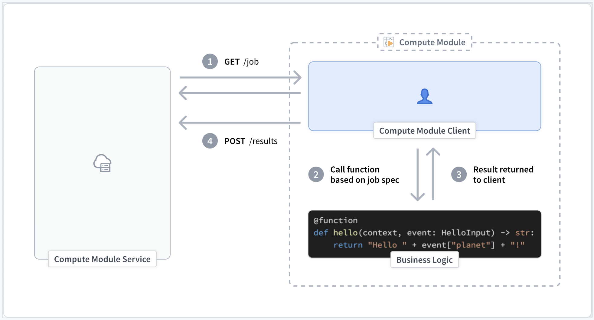

If you are writing a compute module in a supported language (Python, Java, or TypeScript) and use our available SDK, you do not need to manually create client logic.
However, if you are not using the SDK or need to build a compute module using a language that is not currently supported, you must create a compute module client yourself using the process explained below.
A compute module client manages the execution of the logic within a compute module and handles three primary responsibilities:
Before starting the main execution cycle of the client, we recommend publishing the schema of your compute module function(s). This exposes the schema of your compute module to the rest of Foundry. Alternatively, you can define this function schema manually in the Functions tab of your compute module.
For more information review our documentation on automatic function schema inference.
The client polls the internal compute module service continuously for new jobs that must be processed. If a job is present, the client will find the function corresponding to that job and call that function with the associated payload.
Once a function completes and returns the result to the client, the client is responsible for reporting that output back to the compute module service.
Below is a simple visual representation of a compute module client execution lifecycle:

:::callout{theme="warning"} You may see 'connection refused' errors when first attempting to send HTTP requests to the internal compute module service. This is expected behavior during startup and can be fixed with a retry after a short sleep period. :::
GET jobMODULE_AUTH_TOKEN string
DEFAULT_CA_PATH string
GET_JOB_URI string
curl --header "Module-Auth-Token: $MODULE_AUTH_TOKEN" \
--cacert $DEFAULT_CA_PATH \
--request GET \
$GET_JOB_URI
jobId string
queryType string
query JSON object
temporaryCredentialsAuthToken string
authHeader string
{
"computeModuleJobV1": {
"jobId": "9a2a1e94-41d3-47d7-807f-db2f4c547b9c",
"queryType": "multiply",
"query": {
"n": 4.0
},
"temporaryCredentialsAuthToken": "token-data",
"authHeader": "auth-header"
}
}
POST resultresult_data octet-stream
jobId string
jobId provided from the corresponding GET job request.MODULE_AUTH_TOKEN string
DEFAULT_CA_PATH string
POST_RESULT_URI string
None
curl --header "Content-Type: application/octet-stream" \
--header "Module-Auth-Token: $MODULE_AUTH_TOKEN" \
--cacert $DEFAULT_CA_PATH \
--request POST \
--data $result_data \
$POST_RESULT_URI/$jobId
POST function schemaschema_data JSON array
MODULE_AUTH_TOKEN string
DEFAULT_CA_PATH string
POST_SCHEMA_URI string
204: The request was accepted.
None
curl --header "Content-Type: application/json" \
--header "Module-Auth-Token: $MODULE_AUTH_TOKEN" \
--cacert $DEFAULT_CA_PATH \
--request POST \
--data $schema_data \
$POST_SCHEMA_URI
app.py
import json
import logging as log
import os
import socket
import time
import requests
log.basicConfig(level=log.INFO)
certPath = os.environ["DEFAULT_CA_PATH"]
with open(os.environ["MODULE_AUTH_TOKEN"], "r") as f:
moduleAuthToken = f.read()
ip = socket.gethostbyname(socket.gethostname())
getJobUri = f"https://{ip}:8945/interactive-module/api/internal-query/job"
postResultUri = f"https://{ip}:8945/interactive-module/api/internal-query/results"
postSchemaUri = f"https://{ip}:8945/interactive-module/api/internal-query/schemas"
SCHEMAS = [
{
"functionName": "multiply",
"inputs": [
{
"name": "n",
"dataType": {"float": {}, "type": "float"},
"required": True,
"constraints": [],
},
],
"output": {
"single": {
"dataType": {
"float": {},
"type": "float",
}
},
"type": "single",
},
},
{
"functionName": "divide",
"inputs": [
{
"name": "n",
"dataType": {"float": {}, "type": "float"},
"required": True,
"constraints": [],
},
],
"output": {
"single": {
"dataType": {
"float": {},
"type": "float",
}
},
"type": "single",
},
},
]
# Gets a job from the compute module service. Jobs are only present when
# the status code is 200. If status code 204 is returned, try again.
# This endpoint has long-polling enabled, and may be called without delay.
def getJobBlocking():
while True:
response = requests.get(getJobUri, headers={"Module-Auth-Token": moduleAuthToken}, verify=certPath)
if response.status_code == 200:
return response.json()
elif response.status_code == 204:
log.info("No job found, trying again!")
# Process the query based on type
def get_result(query_type, query):
if query_type == "multiply":
return float(query["n"]) * 2
elif query_type == "divide":
return float(query["n"]) / 2
else:
log.info(f"Unknown query type: {query_type}")
# Posts job results to the compute module service. All jobs received must have a result posted,
# otherwise new jobs may not be routed to this worker.
def postResult(jobId, result):
response = requests.post(
f"{postResultUri}/{jobId}",
data=json.dumps(result).encode("utf-8"),
headers={"Module-Auth-Token": moduleAuthToken, "Content-Type": "application/octet-stream"},
verify=certPath,
)
if response.status_code != 204:
log.info(f"Failed to post result: {response.status_code}")
# Posts the schema of this compute module's function(s) to the compute module service.
# This only needs to be called 1 time, thus we call it before entering the main loop.
def postSchema():
num_tries = 0
success = False
while not success and num_tries < 5:
try:
response = requests.post(
postSchemaUri,
json=SCHEMAS,
headers={"Module-Auth-Token": moduleAuthToken, "Content-Type": "application/json"},
verify=certPath,
)
success = True
log.info(f"POST schema status: {response.status_code}")
log.info(f"POST schema text: {response.text} reason: {response.reason}")
except Exception as e:
log.error(f"Exception occurred posting schema: {e}")
time.sleep(2**num_tries)
num_tries += 1
postSchema()
# Try forever
while True:
try:
job = getJobBlocking()
v1 = job["computeModuleJobV1"]
job_id = v1["jobId"]
query_type = v1["queryType"]
query = v1["query"]
result = get_result(query_type, query)
postResult(job_id, result)
except Exception as e:
log.info(f"Something failed {str(e)}")
time.sleep(1)